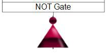
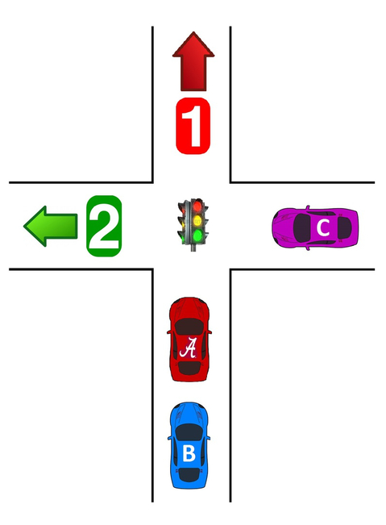
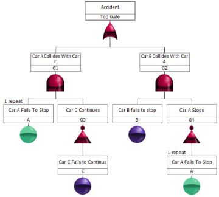
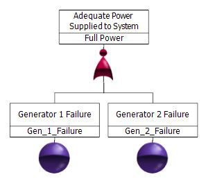
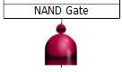
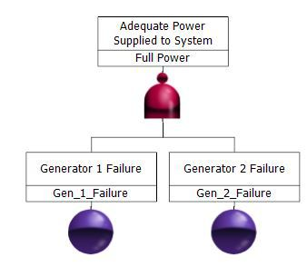
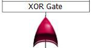
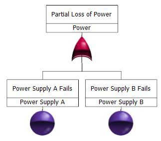

Part II: NOT Logic Gates
Introduction
NOT logic indicates how the lack of an event's occurrence can cause the top event in a fault tree to occur. There are several static gates that use NOT logic. They are the NOT, NOR, NAND, and XOR gates. Because the presence of a NOT logic gate in a fault tree typically results in a non-coherent rather than coherent fault tree, NOT logic gates are sometimes referred to as non-coherent gates.
In a coherent fault tree, each component in the system is relevant, and the structure function is monotonically increasing. A fault tree that contains only AND gates, OR gates, and/or independent events is always coherent. Whenever a NOT logic gate is introduced into a fault tree, it is likely to become non-coherent. While the introduction of disjoint and dependent events is also likely to make a fault tree non-coherent, this article focuses on NOT logic gates.
A fault tree is non-coherent when both component failures and successes (positive and negative events) can cause the top event to occur. For example, system failure might occur due to the recovery of a failed component. Alternatively, during system failure, the failure of an additional component may bring the system to a good state. If the NOT logic can be eliminated from the fault tree, the fault tree is coherent. If the NOT logic cannot be eliminated from the fault tree, the fault tree is non-coherent.
NOT Gate
The NOT gate is used to indicate that the output occurs only when the input event does not occur. There is only one input to a NOT gate. The output is always opposite of the input gate or event.
Summary of Logic: The output is the opposite of the input gate or event.
A truth table for a NOT gate The Boolean equation for a NOT gate is T = ~A.
| A | Output |
|---|---|
| True | False |
| False | True |
Example
A traffic light system is used at the crossing of two mono-directional roads. Assume that the light acts properly and is RED for road 1 and GREEN for road 2. The figure below depicts the scenario.

Given this scenario, the following events can occur:
- A = Car A fails to stop
- B = Car B fails to stop
- C = Car C fails to continue
An accident can occur in two ways:
- Car A acts properly and stops (~A) AND Car B fails to stop (B).
- Car A fails to stop (A) AND Car C continues to move towards area 2 into crossing (~C).

Note: In Windchill Quality Solutions FTA, repeated events are visually noted by displaying them in a blue/green color. Repeated events are created when you copy and paste an event from one part of the fault tree to another.
NOR Gatet
The NOR gate functions like a combination of an OR gate and a NOT Gate. The NOR gate is used to indicate that the output occurs when all of the input events are absent.
The output of a NOR gate can be the top event or an intermediate event. The input events can be basic events, intermediate events, or combinations of both.
Summary of Logic: If there is at least one TRUE input event, the output is FALSE.
A truth table for a NOR gate follows. The Boolean equation for a NOR gate is T = ~(A + B) = (~A) * (~B).>
| A | B | Output |
|---|---|---|
| True | True | False |
| True | False | False |
| False | True | False |
| False | False | True |
Example
Generator 1 and Generator 2 must both operate for there to be adequate power for the system. If either one of these generators fail, there is not enough power.

NAND Gate
The NAND gate functions like a combination of an AND gate and a NOT gate. The NAND gate is used to indicate that the output occurs when at least one of the input events is absent.
Summary of Logic: If there is at least one FALSE event, the output is TRUE.
A truth table for a NAND gate follows. The Boolean equation for a NAND gate is T = ~(A * B) = (~A) + (~B).
| A | B | Output |
|---|---|---|
| True | True | False |
| True | False | True |
| False | True | True |
| False | False | True |
Example
When at least one generator is operating, there is adequate power for the system. If both of these generators fail, there is no power.

XOR Gate
The XOR gate, also known as the Exclusive OR gate, is used to indicate that the output occurs if and only if one of the two input events occurs and the other input event does not occur. An XOR gate can have only two inputs.
Summary of Logic: If one and only one input event is TRUE, the output is TRUE. If more than one input event is TRUE, the output is FALSE.
A truth table for an XOR gate follows. The Boolean equation for an XOR gate is T = (A * [~B]) = ([~A] * B).
| A | B | Output |
|---|---|---|
| True | True | False |
| True | False | True |
| False | True | True |
| False | False | False |
Example
There is a partial loss of power resulting from the failure of either Power Supply A or Power Supply B.

Conclusion
NOT logic indicates how the lack of an event's occurrence can cause the top event in a fault tree to occur. The static gates that use NOT logic are the NOT, NOR, NAND, and XOR gates. The presence of a NOT logic gate in a fault tree typically results in a non-coherent rather than coherent fault tree.
As you can see from this series, there may be more than one way to model a system by employing different gate types. This is advantageous for the analyst because there is flexibility to model a system in an understandable manner, as well as the ability to more accurately portray the system events.
Part III of our series focuses on dynamic gates. Part I of our series covers events and common gates types. For additional information about fault trees and the many benefits provided by Windchill Quality Solutions Fault Tree, click here.